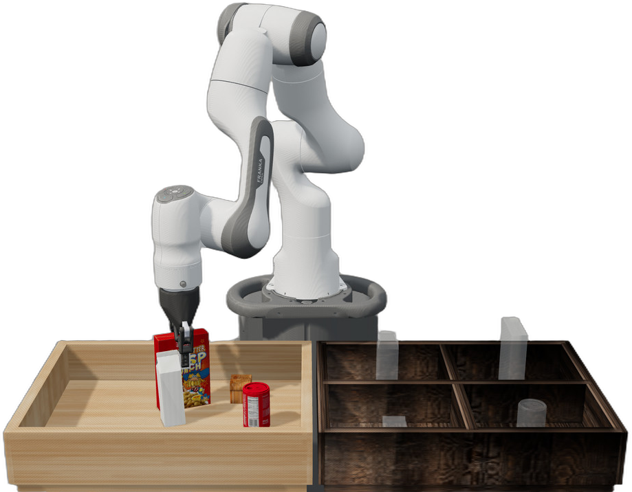

Vision-led
Each run starts from what the camera sees, rather than from fixed object coordinates.
01 Robotics & simulation
A vision-guided pick-and-place pipeline that finds grocery objects, estimates their pose and places each one in the correct bin.

A pick-and-place task looks simple until the robot has to decide where an object is, how it is rotated and how to reach it smoothly without losing it.
I built one connected pipeline: perception converts a camera image into a world pose; a joint-space controller turns that pose into a reliable motion.
Each run starts from what the camera sees, rather than from fixed object coordinates.
The robot receives position and rotation, so it can approach objects in the right orientation.
Grasp and placement are validated before the sequence continues to the next object.
Technical detail is kept here when it helps explain the action — not before it.
YOLO identifies the object class and its bounding box in the agent camera image.
A pose model predicts position and rotation. Camera coordinates are converted to the robot's world frame.
The controller follows a clear state sequence: raise, align, descend, grasp, lift and move to bin.
The pipeline checks whether the object is held and whether it was released in the bin before continuing.
Rather than hiding the models in one accuracy score, the project exposes what each part produces. This makes failures traceable and the whole system easier to improve.
Finds Cereal, Milk, Can and Bread in the camera frame.
Translates a detected object into a position and rotation the robot can use.
Converts Cartesian stage targets to controlled joint-position commands.
Why this matters: when a pick fails, I can see whether the error came from detection, pose estimation or movement — instead of treating the robot as a black box.
Run a new vision-guided pick-and-place sequence or inspect a recorded trajectory in 3D.
Simulation is a practical test bench. It made it possible to tune motion, inspect edge cases and iterate safely before considering a physical robot.
Model quality is only part of the system. Smooth placement also depends on coordinate transforms, controller limits and clear stop conditions.
Interactive replay makes work more legible. A visitor can inspect the same trajectory from any angle instead of trusting a single rendered video.